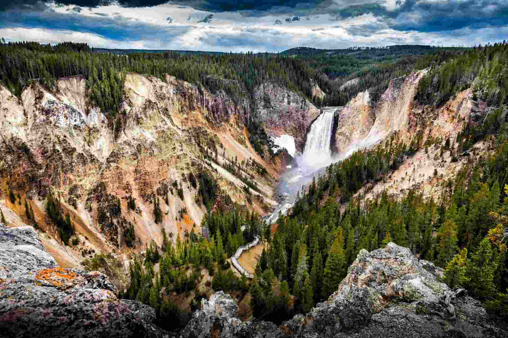

Любой сайт можно сделать быстрее и легче, всего лишь изменив формат изображений на нем. Причем даже без дополнительной компрессии и потери качества. Для этого надо ознакомиться с форматом WebP и конвертировать в него все картинки на странице. Но давайте обо всем по порядку. Мы попробуем сравнить разные форматы картинок одинакового размера 100 кб что бы наглядно убедится какой формат лучше подойдет для оформления сайта.
JPEG — формат, отлично подходящий для изображений с большим количеством цветов. Он мало весит и имеет приемлемое качество, из-за чего обрел столь большую популярность среди пользователей. Главный недостаток JPEG — заметная потеря в качестве и детализации из-за недостаточно продуманных алгоритмов сжатия. Это особенно заметно при приближении или когда у картинки изначально не слишком высокое разрешение.
WebP — это формат файла, разработанный компанией Google в 2010 году. Его особенностью является продвинутый алгоритм сжатия, позволяющий сократить размер картинки без видимых потерь в качестве. У WebP качество картинки при одинаковом размере детализирована гораздо лучше что дает возможность повысить качество контента при более меньших затратах ресурсов. Да, другие форматы тоже поддерживают сжатие, но технологии, стоящие в основе WebP, куда прогрессивнее. И если сравнивать WebP с конкурентами в соотношении степени сжатия к качеству картинки, то разработка Google одержит уверенную победу. В среднем вес картинок сокращается на 25–35%, что позволяет вебмастерам размещать на сайтах больше изображений, не тратя впустую драгоценное пространство на жестком диске арендованного VDS. При разработке формата сотрудники Google использовали те же методики сжатия, что используются в компрессии кодеков VP8.
PNG — формат, ставший золотым стандартом и сумевший сохранить идеальный баланс между качеством и весом. Он подходит для изображений с логотипами или некрупным текстом. Там, где нужна высокая детализация. Но речь идет о графике. С фотоснимками PNG справляется хуже вышеприведенных форматов. Это особенно заметно на этом примере.
Естественно, основное преимущество — это размер. Сокращение размера положительно влияет сразу на четыре аспекта работы в интернете:
Но говорить о преимуществах WebP проще в сравнении с другими форматами.
Поддержка данного формата среди браузеров и веб-приложений постепенно растет. Сейчас с WebP не
возникает проблем ни в Google Chrome, ни даже в Safari. Но остались сайты и программы, которые
все еще не знакомы с этим расширением картинок.
Поддержка в браузере Apple появилась не так
давно, а в Internet Explorer не появится никогда.Как я уже заметил выше, проблема не только в
браузерах, но и в других программных решениях. К примеру, в WordPress нет нативной поддержки
WebP, а это, между прочим, популярнейшая CMS в мире. И таких ресурсов все еще много.
А еще WebP-файлы зачастую нечем открывать на компьютере. Поэтому некоторые пользователи Windows
и Linux негодуют, когда пытаются скачать картинку через Google Chrome, а получают файл с
невнятным расширением, который нельзя открыть.